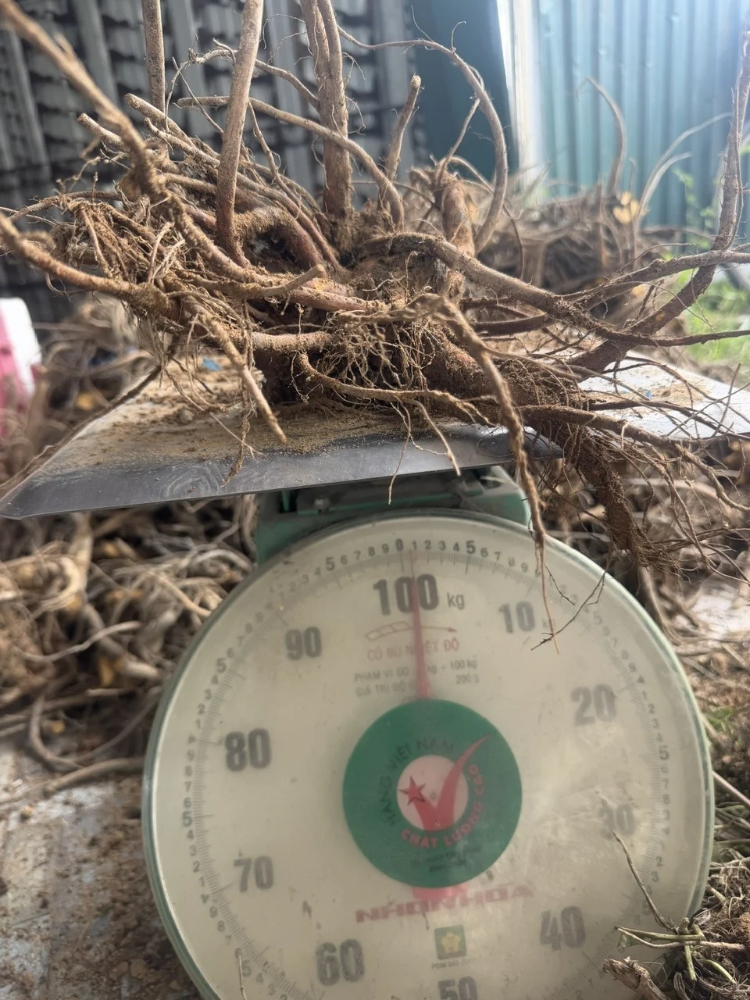
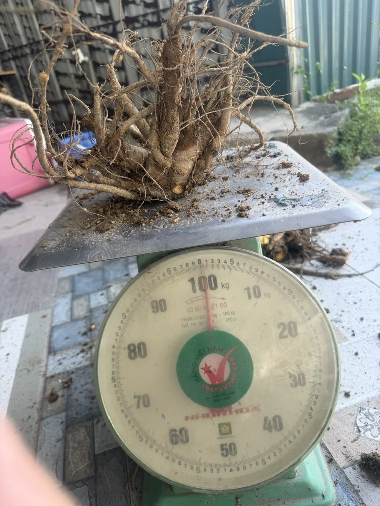
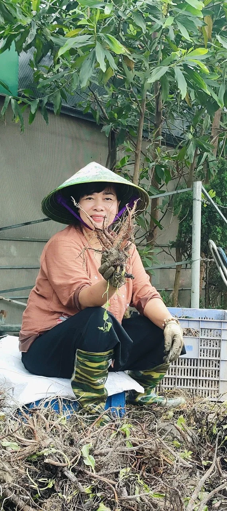
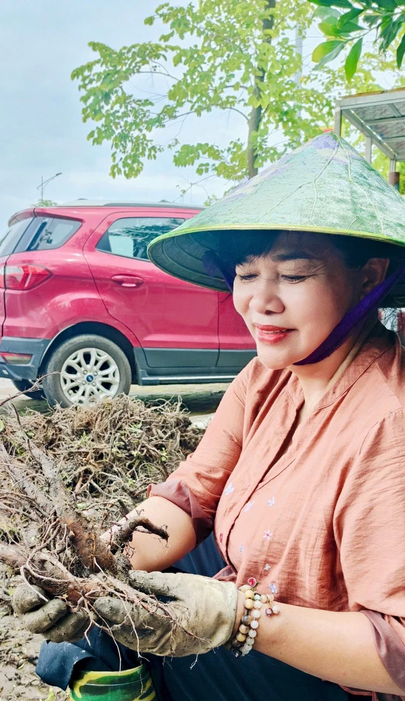
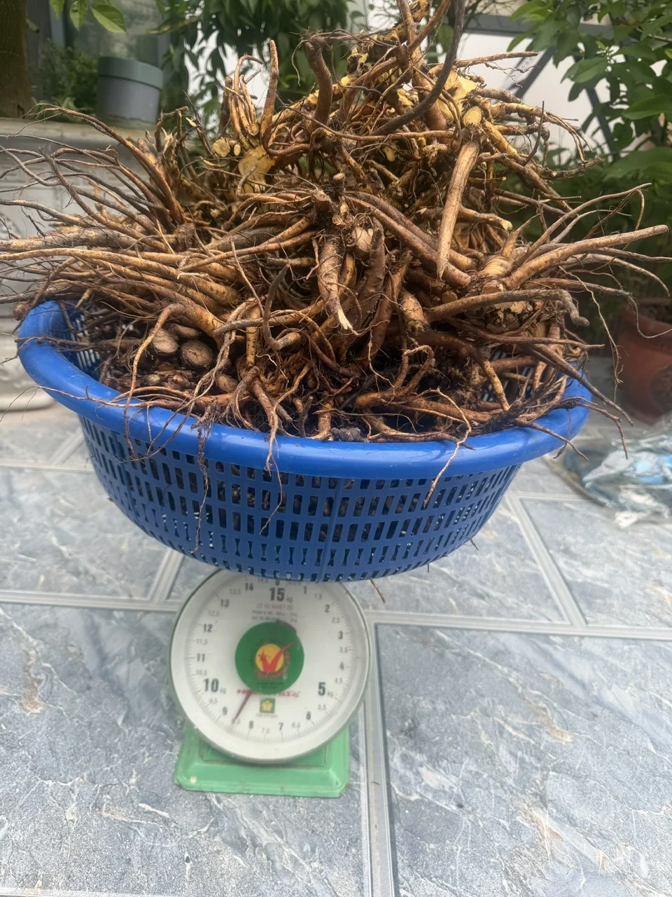
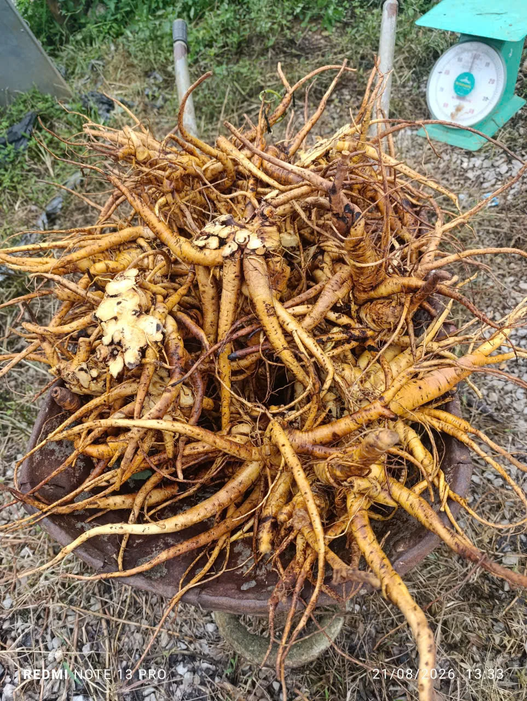
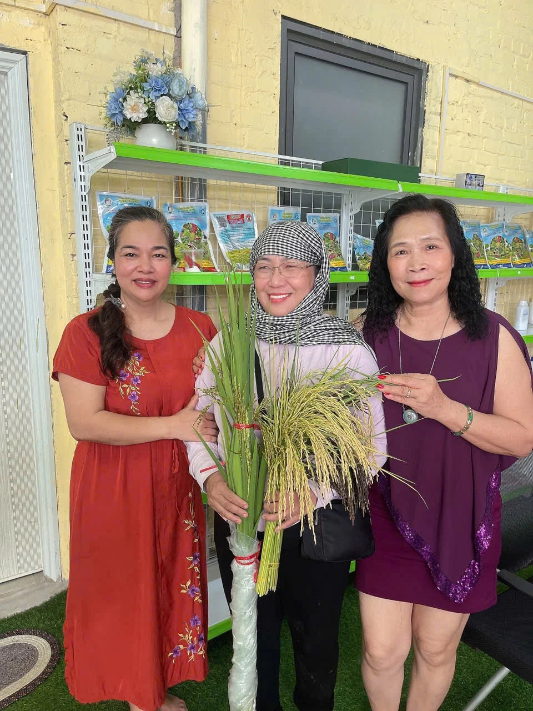

Sóc Sơn
Hà Nội
2 ha
VÙNG TRỒNG
Tổng diện tích trồng 3 ha: 2 ha tại Sóc Sơn và 1 ha tại Ứng Hòa, Hà Nội.
Hà Nội
Hà Nội
Hai địa điểm tại Hà Nội.
Diện tích và địa điểm được cung cấp bởi hộ kinh doanh cá thể Đỗ Thị Tuyết. Ảnh và hai video do chủ hộ cung cấp được trình bày bên dưới; thông tin mùa vụ và nhật ký kỹ thuật sẽ được cập nhật theo hồ sơ thực tế.
Địa chỉ liên hệ của hộ kinh doanh: Số 19A, ngõ 17, thôn Trung Thượng, xã Đại Hùng, Ứng Hòa, Hà Nội.
Trao đổi về nguồn nguyên liệu ↗TƯ VẤN THEO NHU CẦU
TƯ LIỆU CHỦ HỘ CUNG CẤP
Ảnh và video thực tế được bổ sung ngày 17/10/2026. Tư liệu chưa gắn ngày chụp và địa điểm riêng cho từng khung hình.












Góc quay đi dọc hàng cây, cho thấy lá, lối đi và màng phủ luống.
Video do chủ hộ cung cấp · 44 giây · Bấm để phátCảnh người chăm sóc bên luống và toàn cảnh khu trồng dưới ánh nắng.
Video do chủ hộ cung cấp · 66 giây · Bấm để phát